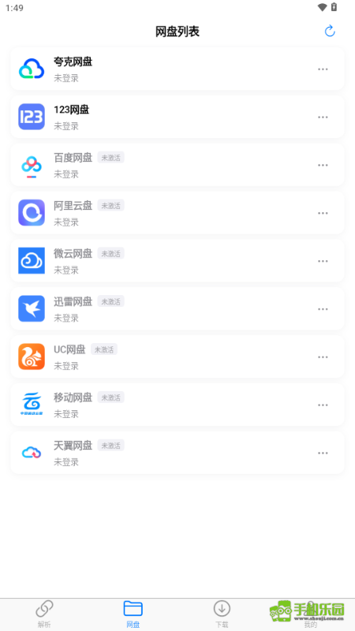

MoePal 翻了个底朝天，这 5 个隐藏功能官方都没怎么宣传
以为 MoePal 只是个网盘解析器？其实它藏着剪贴板监听的 Android 限制、文件夹与标签的组合拳、磁力协议通吃、手动更新入口、甚至降级回退等冷门玩法，翻完本文才算用透。
你以为MoePal官网上介绍的它就是个粘贴网盘链接、点一下解析、然后慢慢等下载的工具？说实话我一开始也是这么用的——直到我把设置菜单翻了三遍、把文档从头扫到尾，才发现它藏着一堆"官方不怎么宣传但用了就回不去"的小功能。今天把这些私藏的冷门技巧全倒出来。
一、剪贴板监听的"前台后门"
第一个要说的，估计八成 Android 用户不知道：你的 MoePal 剪贴板监听可能只在前台生效。
我最早是在一台小米手机上发现的——复制了一个夸克网盘链接，切回主屏想等它自动弹窗，结果等了一分钟啥也没发生。以为是权限没开，去设置里翻了一圈，权限明明是允许的。后来回到 MoePal 前台，它居然自己弹出来了。去文档里查才明白：Android 10 及以上版本系统做了限制，剪贴板监听只能在应用处于前台时工作。
这个功能藏得真深，大多数人以为权限开了就是全局生效。怎么确认自己的版本？打开设置 → 找"剪贴板监听"这一项，开着就行。Windows 和 macOS 用户不用操心，它们前后台都能监听，复制完直接切桌面等弹窗就好。
那后台复制的链接怎么办？手动粘贴呗，没别的捷径。但知道了这个限制，至少不会再傻等半天以为自己手机出问题了。

二、文件夹 + 标签，整理收藏的组合拳
用了一段时间 MoePal，收藏夹和历史记录积压了几百条，找东西翻半天？去MoePal文档翻一下，里面有两种整理手段，但很多人只用文件夹、完全忽略了标签。
先说区别：文件夹是互斥的——一个收藏只能放进一个文件夹，像电脑的目录结构；标签是多对多的——一个收藏可以挂好几个标签，像 Gmail 那种。我见过有人光建文件夹就建了十几个，还在纠结一个资源到底该归"番剧"还是"合集"，其实根本不用选——文件夹放大类、标签标记属性，两边配合不就完了？
举个我自己用的方案：文件夹只建五个——番剧、漫画图包、音声素材、游戏资源、临时收藏。然后每个文件夹里用标签标细节，比如番剧文件夹里挂 新番 完结 蓝光，漫画文件夹里挂 高清 无修 繁体。这样我想找"蓝光完结番剧"的时候，用标签一筛选就出来了，根本不用翻文件夹。
怎么开？点收藏夹右上角"+"建文件夹，进某个收藏详情页找标签区域点"+"加标签，就这么简单。筛选的时候在收藏夹顶部的筛选栏里选文件夹、输入标签名，还能多标签联合筛选——同时有 A 和 B 标签的才出来，精准得很。
有个坑要提醒：别打太多标签。我之前给一个收藏打了六个标签，结果找的时候反而更乱。经验是每个收藏 1~3 个标签足够，多了就是给未来的自己埋雷。

三、不止网盘——磁力、BT、ED2K 协议通吃
MoePal 主打的是网盘解析，但你知道它还能直接下磁力链接、BT 种子文件、ED2K 吗？
这个在文档里只写了一句，官方也没怎么提。我第一次发现是在网上找资源的时候，随手复制了一个磁力链接，抱着试试看的心态粘进了 MoePal，结果它真的识别出来了——Gopeed 引擎原生支持这些协议，不用我另外装下载器。
操作跟网盘链接一模一样：粘进去、解析、下载。BT 种子文件更简单，直接选本地的 .torrent 文件就行。ED2K 这种老 P2P 协议居然也还能用，让我有点意外——以为它早就死透了，没想到 MoePal 还惦记着。
什么人用得上？经常在论坛、贴吧找资源的老司机肯定懂——有些分享者不发网盘链接，只甩磁力或 BT，这时候 MoePal 一个就顶俩，不用再来回切换下载器。如果你只从固定的网盘渠道拿资源，那这个功能可以忽略，但用得上的时候是真的爽。
四、手动检查更新——别等自动提示
MoePal 应该会在打开时联网检查新版本，弹个提示让你选升级还是稍后。但我碰到过好几次——版本隔了一个大版本都没弹通知，还是逛论坛才发现已经更了。
手动检查的入口藏得比较深：打开设置 → 翻到最底部的"关于" → 点"检查更新"按钮，它就会主动去拉最新版本；嫌麻烦的也可以直接去官方下载拿最新安装包覆盖安装。Android、Windows、macOS 三个平台路径一样，统一藏在"关于"里面。
什么时候要手动检查？碰到闪退、解析失败等问题的时候，先手动更一版再说——很多 Bug 在下一个版本里就默默修掉了，文档里"升级后检查清单"也特意提到了这一点。建议至少每月手动查一次，比傻等自动通知靠谱。
五、降级回退——新版本有 Bug 也不怕
最后一个冷知识：MoePal 可以降级回旧版本，只要你提前有备份。
这个功能官方几乎没提，文档里只用一个小节带过。逻辑很简单：卸载新版本、装回旧版本的 APK/安装包、从之前导出的备份文件恢复数据。但有个大前提——降级前必须有升级前的完整备份，因为新版本的数据库结构可能跟旧版本不兼容，直接装回旧版会读不了数据。
备份的方法在设置 → 数据管理里，选 JSON 格式导出收藏夹和历史记录就行。我有个朋友上次升完新版本遇到了下载速度骤降的 Bug，就是靠这个流程滚回了之前的稳定版，前后不到五分钟。
什么情况要降级？新版本有 Bug 且严重影响使用、或者引入了你不需要的大变化。但别频繁降级——来回折腾容易丢数据，除非万不得已。
以上五个功能，我用了小半年 MoePal 才一个个挖出来。
这套资料我三个仓库都同步过了——Gitee 速度快，GitCode 偶尔能拿到额外更新，GitHub 作为主备份一直都在。